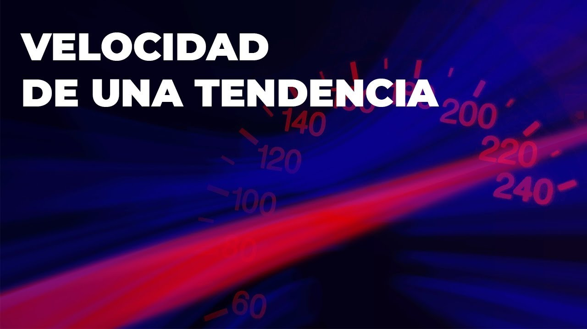

Aceleración de la Tendencia
Cómo mencionábamos en la clase anterior de los ciclos del mercado, cuando el precio se encuentra en una tendencia ya sea alcista o bajista, los inversionistas empiezan a ingresar a fin de poder seguir el flujo del precio.
Mientras más inversionistas entren al mercado a favor del flujo, más inversionistas que están en su contra empiezan a salir, con todo esto podemos ver cómo el precio agarra fuerza, y empieza de esta forma la aceleración de una tendencia.
Es importante que sepamos identificar la aceleración de una tendencia ya que esto nos puede hacer saber cuando la fuerza es tanta que podría terminar rompiendo un nivel de soporte o resistencia.
En la siguiente clase explico más a detalle cómo detectar la aceleración de una tendencia:

Podemos determinar la fuerza del precio observando los ángulos de inclinación de las tendencias.
Esto solo es un aproximado, no es algo que tengas que medir con regla ni debe de quedar exactamente en el valor indicado.
Tendencia Fuerte:
Podemos identificar las tendencias fuertes cuando presentan un ángulo entre los 60°.

Tendencia Saludable:
Podemos identificar las tendencias saludables cuando presentan un ángulo entre los 45°.

Tendencias Débiles:
Podemos identificar las tendencias débiles cuando presentan un ángulo entre los 30-15°.

Si el ángulo es inferior a los 15° decimos que estamos en una consolidación

La fuerza se puede observar de la misma manera independientemente del si la tendencia es bajista o alcista. También puedes ver la fuerza que presentan las tendencias generales y las tendencias secundarias.
Antes de que continúes con las siguientes clases te recomiendo que pases a ver este resumen, donde dejo algunas actividades que puedes realizar para compartir en el salón virtual: Resumen de Tendencias y Volatilidades